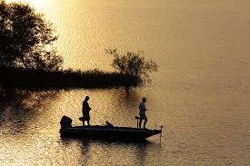

.jpeg) From: Needpix.com
From: Needpix.comThe morning is my favirot becasue it is colder and the fish are more active they usally are chassing bait and one way you can tell is if there is a bunch of little fish on the surface and there is bass blowing up om surface of the water.

From: FlickrThe after noon is my next favirot because all the fish are closer to the top because of bugs which attracts little fish and then the bass follow thats when you through top water. From: Needpix.com
These three days are like the same ether they are realy good or realy bad i usally just dont fish on these days because fish usally go deep and dont bite great.Because they soak in the cold water and save energy tell a hot day. .jpeg) From: Pexels
From: Pexels